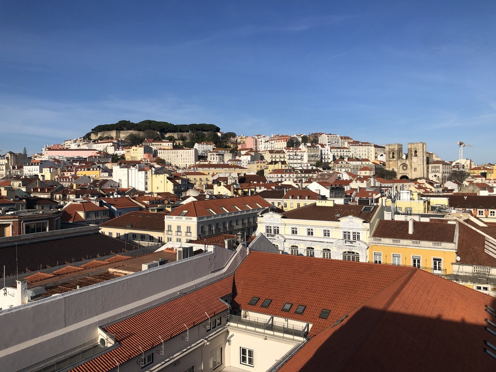

Travel
Madrid

Madrid, the vibrant capital of Spain, is renowned for its rich cultural heritage, lively street life, and iconic landmarks such as the Royal Palace and Prado Museum.
The culture of Madrid is a captivating blend of traditional Spanish customs and a modern, cosmopolitan lifestyle, expressed through flamenco music and dance, lively festivals, and a thriving culinary scene.
Royal Palace

Tortilla
Night Life

My Favorite Parts of Madrid
- The amazing architecture of the Royal Palace of Madrid
- Tortilla, the classic delicious spanish dish made of eggs and potatos
- The dinner culture in Madrid, it is very common to have long and very late dinners
Lisbon
Lisbon, the capital of Portugal, is renowned for its picturesque hills, colorful tiled facades, and a captivating mix of historic charm and modern vitality along the scenic banks of the Tagus River.
Lisbon's culture is a captivating fusion of historic charm and contemporary vibrancy, with its iconic Fado music, intricate azulejo tiles adorning buildings, and a warm and welcoming atmosphere that permeates its lively neighborhoods and traditional markets.
Praca de Comercio

Seafood

Tram Rides

My Favorite Parts of Lisbon
- Enjoy the beautiful scenery of the Praca do Comercio
- Enjoy the amazing seafood Lisbon has to offer
- Ride around the colorful streets of lisbon in its many trams
Cali
Cali, Colombia, known as the "Salsa Capital of the World," captivates visitors with its vibrant cultural scene, diverse architecture ranging from colonial charm to modern skyscrapers, and a lively atmosphere that reflects the city's rich history and dynamic spirit.
Cali's culture is a rhythmic tapestry woven with the passionate beats of salsa music and dance, showcasing the city's love for celebration, artistic expression, and the warm hospitality that defines the unique blend of Afro-Colombian, indigenous, and Spanish influences.
Cristo Rey

Arepa
Night Life
My Favorite Parts of Cali
- Enjoy the beautiful view after hiking up the mountain to see Cristo Rey, cali's most famous monument
- Eating the delicious typical food, especially Arepas which are made of pre-cooked cornmeal
- Attend a dance show to get a glimpse of the vibrant dance culture in Cali